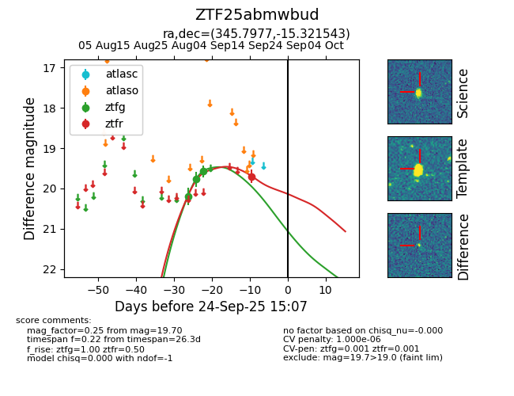
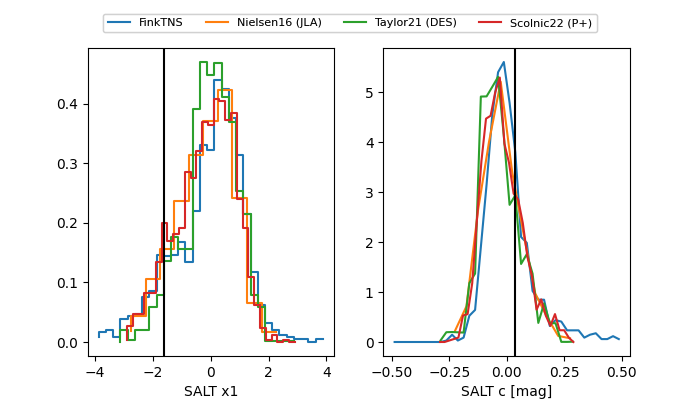

FINK: ZTF25abmwbud
Lasair: ZTF25abmwbud
ALeRCE: ZTF25abmwbud
ZTF25abmwbud (ztf,fink)
equatorial (ra, dec) = (345.7977,-15.32154)
galactic (l, b) = (52.5574,-62.23526)


last ztfg=19.57, ztfr=19.70
3 ztfg, 1 ztfr detections